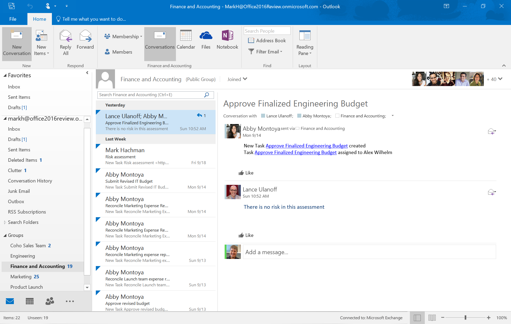

O Outlook é um programa da Microsoft utilizado principalmente para o envio e recebimento de e-mails, sendo muito usado tanto em ambientes profissionais quanto pessoais. Além da função de correio eletrônico, o Outlook também oferece ferramentas como agenda de compromissos, calendário, lista de tarefas, contatos e lembretes, facilitando a organização da rotina. Ele pode ser acessado pelo computador, celular ou diretamente no navegador, e permite integrar várias contas de e-mail em um só lugar. O Outlook é uma ferramenta muito útil para quem precisa se comunicar com eficiência e manter a organização do dia a dia.
Dentro do Outlook, o funcionamento é bastante simples e intuitivo. Ao acessar o programa, o usuário tem acesso à sua caixa de entrada, onde pode visualizar, responder e organizar os e-mails recebidos. Também é possível enviar mensagens, anexar arquivos, criar assinaturas personalizadas e configurar respostas automáticas. Além do e-mail, o Outlook oferece outras funções como calendário, onde o usuário pode marcar compromissos e eventos; lista de tarefas, para organizar atividades do dia a dia; e contatos, onde se pode armazenar informações importantes de pessoas e empresas. Essas ferramentas ficam todas integradas em um único ambiente, facilitando a comunicação, a organização e a produtividade do usuário.
| Função | Descrição | Como Usar |
|---|---|---|
| Enviar e Receber E-mails | Enviar e receber mensagens de e-mail. | Clique em "Novo e-mail" para enviar e em "Enviar/Receber" para atualizar a caixa de entrada. |
| Organizar E-mails com Pastas | Criar pastas para organizar os e-mails. | Clique com o botão direito na "Caixa de entrada" e selecione "Nova pasta". |
| Marcar E-mails como Importantes | Destacar e-mails para fácil referência. | Clique na bandeirinha ou use "Marcar como importante". |
| Agendar Reuniões (Calendário) | Agendar compromissos, reuniões e eventos. | Acesse "Calendário" e clique em "Nova reunião". |
| Criar Tarefas | Gerenciar atividades e tarefas a fazer. | Vá em "Tarefas" e clique em "Nova tarefa". |
| Filtrar E-mails | Visualizar apenas os e-mails desejados. | Use filtros ou crie regras para organizar automaticamente. |
| Respostas Automáticas | Configurar mensagem de ausência. | Vá em "Arquivo" > "Respostas automáticas" e escreva sua mensagem. |
| Anexar Arquivos | Enviar documentos por e-mail. | Use o ícone de clipe de papel ao compor um e-mail. |
| Pesquisar E-mails | Localizar mensagens específicas. | Use a barra de busca no topo da tela. |
| Usar Regras de E-mail | Automatizar organização de e-mails. | Vá em "Arquivo" > "Gerenciar Regras e Alertas". |